import math
import pandas as pd
import numpy as np
from scipy import stats
from scipy.stats import norm
from scipy.stats import tNotebook for Statistics
About
This notebook is for me to record my notes in learning statistics. It includes specific math formulas, examples and how to calculate them in Python. Some notes are directly quoted from various online sources.
Packages used
Conditional Probability
Bayes’ theorem
Bayes’s theorem provides a way to update the probability of an event based on new information about the event.
In Bayesian statistics, prior probability refers to the probability of an event before new data is collected. Posterior probability is the updated probability of an event based on new data. Posterior means occurring after.
\[P(A \mid B) = \frac{ P(B \mid A) * P(A) }{ P(B) }\]
Event A = Rain
Event B = Cloudy
Now we are trying to get the probaility of A given event B.
This means the probability of rain, given it’s cloudy.
This is also called posterior probability.
\[P(Rain \mid Cloud) = \frac{ P(Cloud \mid Rain) * P(Rain) }{ P(Cloudy) }\]
Let’s say below are the probability of each event:
- Overall chance of rain = 10%
- All days start off cloudy = 40%
- Rainy days start of cloudy (P(Cloud|Rain)) = 50%
\[P(Rain \mid Cloud) = \frac{ 50\% * 10\% }{ 40\% }\]
p_a_b = 0.5*0.1/0.4
print(p_a_b)0.125\[P(Rain \mid Cloud) = 12.5%\]
Bayes’ theorem - expaned version
Sometimes you don’t know the probability of event B, which is in the denominator of the equation for the basic Bayes’ theorem. In that case, you can use the expanded version of Bayes’ theorem, because you don’t need to know the probability of event B to use the expanded version.
\[P(A \mid B) = \frac{P(B \mid A) * P(A)} {P(B \mid A) * P(A) + P(B \mid not A) * P(not A)}\]
Let’s say we are conducting test for a medical condition. Below are the related probability:
| Condition | Probability | Variable |
|---|---|---|
| Having the medical condition | 1% | P(A) |
| Test positive | unknown | P(B) |
| Given test is positive, has the medical condition | 95% | P(B | A) |
| Given test is positive, doesn’t have the medical condition | 2% | P(B | not A) |
| Does not have the medical condition | 99% | 1-P(A) |
Now we are trying to find the probability of the person actually having the medical condition, given the test is positive.
This would be P(A | B).
We cannot use the basic Bayes’ theorem as the P(B) is unknown. This is when we need the expaned version.
Putting all available variables into the formula will look like this: \[ P(A \mid B) = \frac{0.95 \times 0.01}{(0.95 \times 0.01) + (0.02 \times 0.99)} \]
P_A_B = 0.95 * 0.01 / (0.95*0.01 + 0.02 * 0.99)
print(P_A_B)0.3242320819112628\[P(A \mid B) = 32.4%\]
Case study - calculate churn rate for a customer type with Bayes’ theorem (or something simplier)
Suppose you want to calculate the churn rate of a specific type of customer, e.g. UK customer.
Given you know the number of customer that are in UK, and the number of churned customer in UK, you can easily calculate their churn rate.
Below is a simple data set:
| Type | Number of customer |
|---|---|
| Total number of customer | 100 |
| Number of churned customer | 60 |
| Number of UK customer | 50 |
| Number of churned UK customer | 30 |
\[\text{Churn rate of UK customer} = \frac{\text{Number of churned UK customer}} {\text{Number of UK customer}}\]
\[\text{Churn rate of UK customer} = \frac{30} {50}\]
churn_rate = 30/50
print(f'Churn rate of UK customer: {churn_rate}')Churn rate of UK customer: 0.6Now look at the Bayes’ theorem \[P(A \mid B) = \frac{ P(B \mid A) * P(A) }{ P(B) }\]
Put the numbers into the equation \[ \text{Event A} = \text{Churn rate by all customer}\] \[ \text{Event B} = \text{Percentage of UK customer}\]
\[ P(A \mid B) = \frac{\frac{30}{60} \times \frac{60}{100}}{\frac{50}{100}} \]
\[P(A \mid B) = \frac{30}{60} * \frac{60}{100} * \frac{100}{50}\] \[P(A \mid B) = \frac{30}{50}\]
print(f'P(B|A) = {30/50}')P(B|A) = 0.6They both return the same result.
When we know enough variables, it is sufficient for us to directly calculate the churn rate. However when we don’t have enough data, or when the scenario is new, we may need to apply the Bayes’ theorem to get the value we need.
Discrete Probability Distribution
Binomial distribtuion
Binomial distribution referes to the calculation of the probability of k out of n ways.
Let’s say we know in a coin toss, there is a 50% chance for it to be a head or a tail. If we toss it for 10 times, what is the probability that we get 5 heads? We can use binomial distribution to calculate the value.
Note that to use binomial distribution, the two results must be mutually exclusive. Like in a coin toss, there can only be a head or toss.
Or in a roll of die, you either get a 3 or not get a 3.
This is how we calculate the binomial distribution:
\[P(x=k) = \frac{n!} {k!(n-k)!} * p^k (1-p)^{n-k}\]
The meaning of each variables: \[k = \text{number of success}\]
\[n = \text{number of trials}\]
\[p = \text{probability of success on a given trial}\]
We can break this down into 2 parts.
n-choose-k
\[\frac{n!} {k!(n-k)!}\]
This is known as n-choose-k, which refers to the number of outcome we want, or the number of success we can get at the given number of trials.
Say you want to know out of 3 coin toss, the number of outcomes where you can get 2 heads.
The formula would be:
\[\text{n-choose-k}=\frac{3!} {2!(3-2)!}\] \[\text{n-choose-k}=\frac{3*2*1} {2*1*1}\]
n_choose_k = 3*2*1/2*1*1
print(f'n-choose-k = {n_choose_k}')n-choose-k = 3.0Probability of each outcome
Now that we know what is the number of outcomes we can get 2 heads, we need to know the probability of each outcome as well, which will allow us to calculate the probability of x=k.
\[p^k(1-p)^{n-k}\]
Now we know the chances of getting a head in each toss is 50%
Put it into work, it would be: \[0.5^2(1-0.5)^{3-2}\]
\[=0.5*0.5*0.5\]
prob_of_each_outcome = 0.5* 0.5 * (1-0.5)
print(f'Probability of each outcome = {prob_of_each_outcome}')Probability of each outcome = 0.125In cases like a coin toss, where you know the chance is 50%, there is also an easier way to get the probability of each outcome.
Say for each coin toss, you can get 2 possible outcomes. For 2 coin toss, you get 2^2, which is 4 outcome.
Now for 3 coin toss, you will get the total possible outcome of 2^3, which is 8.
The probability of getting each outcome is 1/8, which is also 0.125.
print(f'total number of possible outcome = {2**3}')
print(f'proabbility of each outcome = {1/2**3}')total number of possible outcome = 8
proabbility of each outcome = 0.125Final outcome
Now that we can put the two together.
\[p(x=k) = n-choose-k * \text{probability of each outcome}\] \[p(x=k) = 3*0.125\]
binomial_dist = 3*0.125
print(f'p(x=k) = {binomial_dist}')p(x=k) = 0.375(WIP)Case study: chances of customer make a return to a store
You are working for a retail store. You know that 10% of all customers visiting the store would make a return.
Now 3 customers visit the store, what is the probability that they will return?
Let’s apply the Binomial distribution formula to all possible situations.
Result should be like below:
| Number of success | P |
|---|---|
| p(x=0) | 0.729 |
| p(x=1) | 0.243 |
| p(x=2) | 0.027 |
Poisson distribution
Possion distribution models the probability that a certain number of events will occur during a specific time period.
Below are some practical use cases
- Calls per hour for a customer service call centre
- Visitors per hour for a website
- Customers per day at a restaurant
Below are necessary for a Poisson experiment
- The number of events in the experiment can be counted
- The mean number of events that occur during a specific time period is known
- Each event is independent
Poisson distribution formula
\[p(x=k) = \frac{λ^k e^{-λ}}{k!}\]
- λ (lambda) is the mean number of events that occur during a specific time period
- k refers to the number of events
- e: a constant equal to approximately 2.71828
- e^-λ: 1/e^λ
Example: possible number of order in a drive through restaurant (WIP)
Let’s say we know that the average number of order per minute is 2.
We can use the Poisson formula to determine the probability of the restaurant receiving 0, 1, 2 or 3 orders per minute.
| Number of orders | P |
|---|---|
| p(x=0) | 0.1353 |
| p(x=1) | 0.2707 |
| p(x=2) | 0.2707 |
| p(x=3) | 0.1805 |
Possion VS Binomial
| Given | Want to Find | |
|---|---|---|
| Poisson | The average probability of an event happening for a specific time period | The probability of a certain number of events happening in that time period |
| Binomial | An exact probability of an event happening | The probability of the event happening a certain number of times in a repeated trial |
Continuous Probability
The normal distribution
This is also know as the bell curve. It has the following features:
- The shape is a bell curve
- The mean is located at the centre of the curve
- The curve is symmetrical on both sides of the center
- The total area under the curve equals 1
The bell curve follows the emprical rule
- 68% of values fall within 1 standard deviation of the mean
- 95% of values fall within 2 standard deviation of the mean
- 99.7% of values fall within 3 standard deviation of the mean
Z-score
Z-score allows us to compare the normal distribution of different dataset by standardise the normal distribution. It looks at the normal distribution in terms of standard deviation. This is also known as standarised normal distribution


Formula - mean
This is how we calculate the Z-score: \[Z = \frac{x-μ}{σ}\] \[x = \text{a single data value/raw score}\] \[μ/mu = \text{the population mean}\] \[σ/sigma = \text{the poplation standard deviation}\]
Now let’s say you have a test score of 133. The test has a mean score of 100 and a standard deviation of 15. The equation would look like this: \[Z = \frac{133-100}{15}\]
z_score = (133-100)/15
print(f'Z-score: {z_score}')Z-score: 2.2Formula - proportion
\[Z = \frac{\hat{P}-P}{\sqrt{\frac{\hat{P}(1-\hat{P})}{n}}}\]
\[\hat{P} = \text{Obverved sample proportion}\] \[P = \text{Population proportion}\] \[n = \text{Sample size}\]
This measures the standard error of the proportion. Note that if we are calculating the Z-score for a hypothesis test, you may replace the sample proportion (p hat) with the population proportion (p). In hypothesis testing, we are testing whether the true population proportion P is equal to the hypothesized value. Therefore, we calculate the standard error assuming the null hypothesis is true and use P to determine how much variability we expect in the sample proportions. \[\sqrt{\frac{\hat{P}(1-\hat{P})}{n}} = \text{Sample error of the proportion}\]
Python
You can use the z-score function in the scipy package to calculate the z-score of each datapoint in your dataframe.
Smaller sample size - T-score and T-distribution
The Student’s t-distribution, often just called the t-distribution, is a probability distribution that is used when estimating the mean of a normally distributed population in situations where the sample size is small, and the population standard deviation is unknown. This distribution was developed by William Sealy Gosset under the pseudonym “Student.”
It is similar to the normal distribution but more compressed with heavier tails.
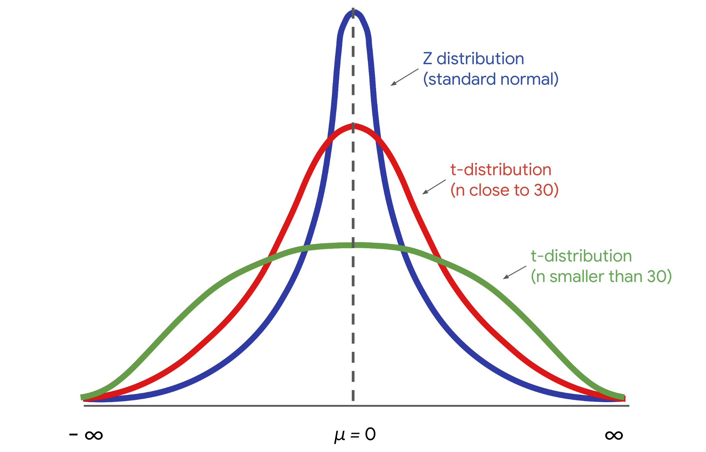
Below are the differences between T-score and Z-score:
| Feature | Z-Score | T-Score |
|---|---|---|
| Sample Size | Large samples (n>30n>30) | Small samples (n≤30n≤30) |
| Population Standard Deviation | Known | Unknown |
| Distribution | Normal distribution | T-distribution (heavier tails) |
| Applications | Standardized tests, quality control, large-scale surveys | Small-sample studies, medical trials, social science experiments |
| Type of Data | Population data or large samples | Sample data when population parameters are unknown |
Sampling distribution
Standard Error of the Mean
The standard error formula is base on the math assumption of repeated sampling, and it calculates the possible range of the actual mean based on one sample.
\[\text{Standard error of the mean} = \frac{σ*}{\sqrt{n}}\] \[σ = \text{Standard deviation of the population}\]
*The standard deviation of the population is usually unknown, so in practice we often use the standard deviation o the sample instead.
\[\text{Standard error of the mean} = \frac{s}{\sqrt{n}}\] \[s = \text{The sample standard deviation}\] \[n = \text{The sample size}\]
The larger the sample size is,the smaller the error would be.
Now let’s say we have a sample of 100 penguine, which has a mean weight of 3 pounds and a standard deviation of 1 pound.
\[\text{Stand error of the mean} = \frac{1}{\sqrt{100}}\]
sample_std = 1
n_sqr = math.sqrt(100)
standard_error = sample_std/n_sqr
print(standard_error)0.1Now while the best estimated mean of the population will still be 3 pounds, you know that the mean will vary with a standard deviation of 0.1 pound.
The Central Limit Theorem
The sample distribution of the mean approaches a normal distribution when the sample size increases.
Standard Error of the Proportion
Theory and formula
The standard error of proportion measures the standard error of a sampling proportion.
\[SE(\hat{p}) = \sqrt{\frac{\hat{p}(1-\hat{p})}{n}}\]
\[\hat{p} (\text{p hat}) = \text{population proportion}\]
\[n = \text{sample size}\]
Say you are researching a population of 100,000, in a sample with 100 people, 10% of them prefer slipon sneaker.
\[SE(\hat{p}) = \sqrt{\frac{0.1(1-0.1)}{100}}\]
import math
phat = 0.1
sample = 100
sample_error = math.sqrt(0.1*(1-0.1)/100)
print(sample_error)0.030000000000000002The sample error is 0.03, which means that the estimate population proportion who prefer slipon sneaker is 10%, which would deviate for +/-3%.
Case study: apply the standard error of the proportion to churn rate
Say you know that you have 100 customers (current and churned) in Scotland, and their churn rate is 60%. You can use the standard error formula to understand how much the sample proportion (in your case, the sample churn rate) is expected to vary from the true population proportion (the true churn rate for all current and future customers).
import math
# Given data
p_hat = 0.60 # Sample churn rate
n = 100 # Sample size
# Standard error calculation
standard_error = math.sqrt((p_hat * (1 - p_hat)) / n)
print(standard_error)0.04898979485566356The standard error is around 0.05, which means that the standard deviation of the churn rate for current and future Scotland customer will be at 60%, vary for +-5%.
You can further calculate the confidence level base on the standard error and sample size, to understand how reliable this is.
Confidence level
Imagine you want to estimate the mean weight of a population of 10,000 penguins. Instead of weighing every single penguin, you select a sample of 100 penguins. The mean weight of your sample is 30 pounds. Based on your sample data, you construct a 95% confidence interval between 28 pounds and 32 pounds.
95 CI [28, 32]
Usual confidence level choosen are as follow:
- 90%
- 95%
- 99%
Interpret the confidence interval
Technically, 95% confidence means that if you take repeated random samples from a population, and construct a confidence interval for each sample using the same method, you can expect that 95% of these intervals will capture the population mean. You can also expect that 5% of the total will not capture the population mean.
The confidence level refers to the long-term success rate of the method, or the estimation process based on random sampling.
Imagine you take 20 random samples of 100 penguins each from the penguin population, and calculate a 95% confidence interval for each sample. You can expect that approximately 19 of the 20 intervals, or 95% of the total, will contain the actual population mean weight of 31 pounds. One such interval will be the range of values between 28 pounds and 32 pounds.

Incorrect interpretations
- There is a 95% probability that the population mean falls within the constructed interval. (It’s not true!)
What you can say is that if you take repeated random samples from the population, and construct a confidence interval for each sample using the same method, you can expect 95% of your intervals to capture the population mean.
Pro tip: Remember that a 95% confidence level refers to the success rate of the estimation process.
- 95% of all of the data values in the population fall within the interval (Also not true. )
Construct confidence interval for porportion
- Identify a sample statistic
- Choose a confidence level
- Find the margin of error
- Calculate the interval
Let’s say you work for election polling. Below would be the associate data point.
| Component | Metric | Data |
|---|---|---|
| Sample statistic | Percentage of sample that prefer candidate A | 55% |
| Confidence level | 95% | 1.96 |
| Standard error | Standard error of poportion from the sample (assume sample size is 100) | 5% |
| Margin of error | Assume a large sample size and normal distribution, it would be z-score * standard error | 1.96*0.05=0.098 |
| Upper limit of the interval | Sample stat + margin of error | 55%+9.8%=64.8% |
| Lower limit of the interval | Sample stat - margin of error | 55%-9.8%=45.2% |
| Confidence Interval | Upper limit - lower limit | 64.8%-45.2%=19.6% |
| Confidence Level | Z-score |
|---|---|
| 90% | 1.645 |
| 95% | 1.96 |
| 99% | 2.58 |
The formula for calculate margin of error in a large sample size would be:
\[\text{Margin of error} = \text{z-score}*\text{standard error}\]
Note that in a smaller sample size, we will need to use t-score to calculate the margin of error.
In the situation of polling, we will use the standard error of poportion for the standard error calculation:
\[SE(\hat{p}) = \sqrt{\frac{\hat{p}(1-\hat{p})}{n}}\]
\[\text{Sample proportion}=0.55\] \[\text{Sample size}=100\]
import math
p=0.55
n=100
se = math.sqrt(p*(1-p)/n)
print(f'Standard error of porportion: {se}')Standard error of porportion: 0.049749371855330994Construct confidence interval for mean
- Identify a sample statistic
- Choose a confidence level
- Find the margin of error
- Calculate the interval
Let’s say this time you work for a a cellphone manufactory company, and you are trying to get the average battery life of a new cellphone battery.
| Component | Metric | Data |
|---|---|---|
| Sample statistic | Mean | 20.5 |
| Confidence level | 95% | 1.96 |
| Standard error | Standard error of poportion from the sample (assume sample size is 100) | 0.15 |
| Margin of error | Assume a large sample size and normal distribution, it would be z-score * standard error | 1.96*0.15=0.294 |
| Upper limit of the interval | Sample stat + margin of error | 20.5+0.294=20.794 |
| Lower limit of the interval | Sample stat - margin of error | 20.5-0.294=20.206 |
| Confidence Interval | Upper limit - lower limit | 20.794-20.206 |
We want to use the standard error of the mean to calculate the margin of error.
As we know the standard deviation of the population, we can use that for the formula. \[\text{Standard error of the mean} = \frac{σ}{\sqrt{n}}\]
import math
sigma=1.5
n=100
se = 1.5/math.sqrt(100)
print(f'Standard error: {se}')Standard error: 0.15Calculate confidence interval with SciPy
First let’s generate a random sample of a survey result of government support rate by town.
import pandas as pd
import numpy as np
# Set seed for reproducibility
np.random.seed(42)
# Number of rows
n_rows = 500
# Generate town names (using 'Town' with an index for uniqueness)
towns = [f'Town_{i+1}' for i in range(n_rows)]
# Generate random support rates (between 0 and 100)
support_rates = np.random.uniform(0, 1, n_rows).round(2)
# Create the DataFrame
data = pd.DataFrame({
'town': towns,
'support_rate': support_rates
})
data.head() # Display the first few rows of the dataset
data.describe()
data['support_rate'].mean()0.49871999999999994The average support rate by town for the whole data set is 0.4987.
Now take a random sample size of 50.
data_sample = data.sample(n=50, replace=True, random_state=30624300)To get the confidence interval of the sample, we will need to know the below:
- Confidence level
- Sample mean
- Sample standard error
Assume we want the confidence level of 95 or 99.
confi_level = 0.95
sample_mean = data_sample['support_rate'].mean()
print(f'Sample mean: {sample_mean}')
print()
standard_error = data_sample['support_rate'].std()/np.sqrt(data_sample.shape[0])
print(f'Standard error: {standard_error}')
print()
conf_interval = stats.norm.interval(confi_level, loc=sample_mean, scale=standard_error)
print(f'Confidence interval of the sample with confidence level of {confi_level}: ')
print(conf_interval)
print()
confi_level = 0.99
print(f'Confidence interval of the sample with confidence level of {confi_level}: ')
print(conf_interval)Sample mean: 0.5239999999999999
Standard error: 0.047072675032271936
Confidence interval of the sample with confidence level of 0.95:
(0.4317392522807891, 0.6162607477192107)
Confidence interval of the sample with confidence level of 0.99:
(0.4317392522807891, 0.6162607477192107)Hypotheses testing
Steps for conducting a hypothesis test
State the null hypothesis and the alternative hypothesis.
Choose a significant level.
Find the p-value.
Reject or fail to reject the null hypothesis. (by comparing p-value and significant level)
Null VS Alternative hypothesis
| Null hypothesis (H0) | Alternative hypothesis (Ha) | |
|---|---|---|
| Claims | There is no effect in the population. | There is an effect in the population. |
| Assumption | Assumed to be true unless there is convincing evidence to the contrary. | Accepted as true only if there is convincing evidence for it. |
| Language |
|
|
| Symbols | Equality (=, ≤, ≥) | Inequality (≠, <, >) |
Significant level
This is the threshold at which we will consider our result statiscally significant. It is also the probability of rejecting the null hypothesis when it is true.
5% is the most common standard for significant level.
For more strict result, 1% is used.
P-value
The probability of observing a difference in your result as or more extreme than the difference observed when the null hypothesis is true.
It is used to compared against the significant level.
The p-value is calculated by test statistic, a value that shows how closely your observed data matches the distribution expected under the null hypothesis. After getting a t-score or a z-score from a t-test or z-test, you can calculate the p-value by
Examples of Null and Alternative hypothesis
Example#1: Mean weight
An organic food company is famous for their granola. The company claims each bag they produce contains 300 grams of granola—no more and no less. To test this claim, a quality control expert measures the weight of a random sample of 40 bags.
- H0: μ = 300 (the mean weight of all produced granola bags is equal to 300 grams)
- Ha: μ ≠ 300 (the mean weight of all produced granola bags is not equal to 300 grams)
Example#2: Mean height
Suppose it’s assumed that the mean height of a certain species of tree is 30 feet tall. However, one ecologist claims the actual mean height is greater than 30 feet. To test this claim, the ecologist measures the height of a random sample of 50 trees.
- H0: μ ≤ 30 (the mean height of this species of tree is equal to or less than 30 feet)
- Ha: μ > 30 (the mean height of this species of tree is greater than 30 feet)
Example#3: Proportion of employees
A corporation claims that at least 80% of all employees are satisfied with their job. However, an independent researcher believes that less than 80% of all employees are satisfied with their job. To test this claim, the researcher surveys a random sample of 100 employees.
- H0: p ≥ 0.80 (the proportion of all employees who are satisfied with their job is equal to or greater than 80%)
- Ha: p < 0.80 (the proportion of all employees who are satisfied with their job is less than 80%)
Type I and Type II errors
When you decide to reject or fail to reject the null hypothesis, there are four possible outcomes–two represent correct choices, and two represent errors. You can:
- Reject the null hypothesis when it’s actually true (Type I error)
- Reject the null hypothesis when it’s actually false (Correct)
- Fail to reject the null hypothesis when it’s actually true (Correct)
- Fail to reject the null hypothesis when it’s actually false (Type II error)
One sample tests - T-test vs z-test
One-sample tests are usually used to determine whether a population mean is equal to a specific value.
The primary difference between the one-tail t-test and the one-tail z-test lies in the distribution they use, which depends on whether the population standard deviation is known and the sample size. Both tests are used to determine if there is a significant difference between the sample mean and the population mean, but they differ slightly in their formula.
One tail t-test
The t-test is typically used when:
- The sample size is small (generally n<30).
- The population standard deviation σ is unknown, so we estimate it using the sample standard deviation s.
The formula for the t-test statistic is: \[t = \frac{\bar{x}-μ}{\frac{s}{\sqrt{n}}}\]
Where:
- x̄ = sample mean
- μ = population mean (hypothesized)
- s = sample standard deviation
- n = sample size
- s/sqrt(n) = standard error of the sample mean
The result is compared with a t-distribution with n−1 degrees of freedom to get the critical value for a one-tail test.
One tail z-test
The z-test is typically used when:
The sample size is small (generally n<30).
The population standard deviation σ is unknown, so we estimate it using the sample standard deviation s.
The sample size is large (typically n≥30).
The population standard deviation σ is known.
The formula for the z-test statistic is: \[z = \frac{\bar{x}-μ}{\frac{σ}{\sqrt{n}}}\]
Where:
- x̄ = sample mean
- μ = population mean (hypothesized)
- σ = population standard deviation
- n = sample size
- σ/sqrt(n) = standard error of the population mean
The result is compared with the standard normal distribution (Z-distribution) to get the critical value for a one-tail test.
Calculate the p-value from a one-tail/two-tail z-score and t-score
Z-score
Two-tail z-test \[\text{p-value} = 2 \times P(Z \geq |z|)\]
Right-tail z-test \[\text{p-value} = P(Z \geq z)\]
Left-tail z-test \[\text{p-value} = P(Z \leq z)\]
Example Suppose z = 1.96 in a two-tail test.
\[P(Z \geq 1.96) = 0.025\] \[\text{p-value} = 2*0.025 = 0.05\]
from scipy.stats import norm
print((1-norm.cdf(abs(1.96)))*2)0.04999579029644097Calulation in python
from scipy.stats import norm
# Given z-score
z = 1.96
# Two-tailed test p-value
p_value_two_tailed = 2 * (1 - norm.cdf(abs(z)))
# Right-tailed test p-value
p_value_right_tailed = 1 - norm.cdf(z)
# Left-tailed test p-value
p_value_left_tailed = norm.cdf(z)
print("Two-tailed p-value:", p_value_two_tailed)
print("Right-tailed p-value:", p_value_right_tailed)
print("Left-tailed p-value:", p_value_left_tailed)Two-tailed p-value: 0.04999579029644097
Right-tailed p-value: 0.024997895148220484
Left-tailed p-value: 0.9750021048517795T-score
In a t-test, you also want to determine the degree of freedom (df). In a one sample t-test, it would usually be n-1. \[df = n-1\]
Below are some different cases of degree of freedom baseon the test we conduct:
| Test | Degrees of Freedom (df) |
|---|---|
| One-Sample t-Test | n−1 |
| Paired t-Test | n−1 |
| Two-Sample t-Test (Equal Variances) | n1+n2−2 |
| Two-Sample t-Test (Unequal Variances) | Approximate df based on Welch-Satterthwaite equation |
| ANOVA (Between Groups) | k−1 |
| ANOVA (Within Groups) | N−k |
| Chi-Square (Goodness-of-Fit) | k−1 |
| Chi-Square (Independence) | (r−1)(c−1) |
| Linear Regression (Residual) | n−p−1 |
| F-Test | df1,df2 |
Two-tail t-test \[\text{p-value} = 2 \times P(T \geq |t|;df)\]
Right-tail t-test \[\text{p-value} = P(T \geq t;df)\]
Left-tail t-test \[\text{p-value} = P(T \leq t;df)\]
Calculation in python
from scipy.stats import t
# Given t-score and degrees of freedom
t_score = 2.0
df = 10 # degrees of freedom
# Two-tailed test p-value
p_value_two_tailed_t = 2 * (1 - t.cdf(abs(t_score), df))
# Right-tailed test p-value
p_value_right_tailed_t = 1 - t.cdf(t_score, df)
# Left-tailed test p-value
p_value_left_tailed_t = t.cdf(t_score, df)
print("Two-tailed p-value (t-test):", p_value_two_tailed_t)
print("Right-tailed p-value (t-test):", p_value_right_tailed_t)
print("Left-tailed p-value (t-test):", p_value_left_tailed_t)Two-tailed p-value (t-test): 0.07338803477074052
Right-tailed p-value (t-test): 0.03669401738537026
Left-tailed p-value (t-test): 0.9633059826146297```{python}
stats.ttest_1samp(a = aqi_michigan['aqi'], popmean=10, alternative='greater')
```One sample tests - Z-test
Assumption:
- The data is a random sample of a normally distributed population
- The standard deviation of the population is known
Case Study: Online Delivery
Let’s say you work for an online delivery company. Currently the average delivery time is 40 minutes, with a standard deviation of 5 minutes.
Recently, the company launched a new training program to make the delivery more efficient. After the drivers completed the training program, the company tracked a random sample of 50 deliveries to understand how long a delivery take. The sample has an average delivery time of 38 minutes, and a standard deviation of 5 minutes.
Now the company wants to know if the decrease in delivery time is due to chance, or is statistically significant.
We can determine this with a one hypothesis z-test.
Population
- Mean = 40 min
- Standard deviation = 5 min
Sample
- Mean = 38 min
- Standard deviation = 5 min
Let’s build the hypothesis step by step:
Null hypothesis
The average delivery time equals 40 minutes.
Alternative hypothesis
The average delivery time is less than 40 minutes.
Significant level
5%
This is the threshold at which we will consider our result statiscally significant. It is also the probability of rejecting the null hypothesis when it is true.
P-value
The probability of observing a difference in your result as or more extreme than the difference observed when the null hypothesis is true.
The probability of observing a difference that is two minutes or greater if the null hypothesis is true. If the probability of this outcome is very unlikely, in particular, if your p-value is less than your significance level of five percent, then you’ll reject the null hypothesis.
If p-value < 5%, then reject the null hypothesis.
In this case, as we are using z-test, we will calculate the z-score to find the p-value.
\[z = \frac{\bar{x}-μ}{\frac{σ}{\sqrt{n}}}\]
Where:
- x̄ = sample mean
- μ = population mean (hypothesized)
- σ = population standard deviation
- n = sample size
- σ/sqrt(n) = standard error of the population mean
\[z = \frac{38-40}{\frac{5}{\sqrt{50}}}\]
import math
from scipy.stats import norm
sample_mean = 38
pop_mean = 40
pop_std = 5
sample_size = 50
z_score = (sample_mean-pop_mean)/(pop_std/math.sqrt(sample_size))
p_value = norm.cdf(z_score)
print(f'Z-score: {z_score}')
print(f'P-value: {p_value}')Z-score: -2.8284271247461903
P-value: 0.0023388674905236283In this case, the z-score is -2.8284. P-value is 0.0023 or 0.23%.
In this case, it is very unlikely that the mean delivery time is 38 minutes when the null hypothesis is true. In other words, it’s highly unlikely that the sample mean of 38 is due to chance. Therefore we reject the null hypothesis.
The p-value we calculated here is the probability for when the z-score <= -2.8284 in a normal distribution, which is the red area in the image below.
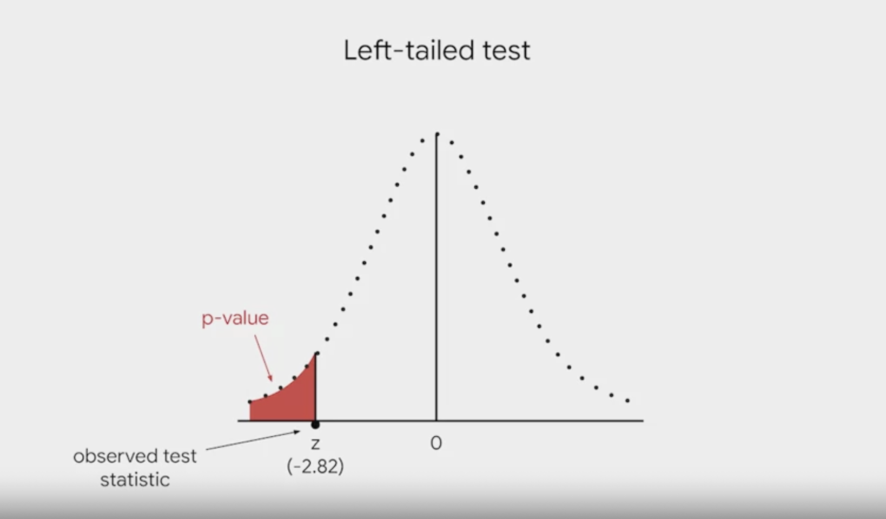
Two-sample test
A two-sample test determines whether two population means are equal to each other. It is frequently used in A/B testing.
Two-sample t-test for means
Assumption
- The two samples are independent of each other
- For each sample, the data is drawn randomly from a normally distributed population
- The population standard deviation is unknown
Hypothesis
- Null: There is no difference in the mean on version A and version B
- Alternative: There is a difference in the mean on version A and version B
- Significant level: Usually 5%, can also be 1% or 10%
- P-value: The probability of observing a difference in your sample means as or more extreme than the difference observed when the null hypothesis is true
Code
If you have the full sample data, you can leverage Scipy’s t-test functions to calculate the t-score and p-value as below:
```{python}
stats.ttest_ind(a=sampled_state21['OVERALL_LI'], b=sampled_state28['OVERALL_LI'], equal_var=False, alternative='two-sided')
```It should return the t-score and p-value like below: Ttest_indResult(statistic=2.8980444277268735, pvalue=0.006421719142765231)
T-score for two-sample t-test
\[t = \frac{(\bar{x}_1 - \bar{x}_2)}{\sqrt{({\frac{s^2_1}{n_1} + \frac{s^2_2}{n_2}})}}\]
- x̄ = sample mean
- s = sample standard deviation
- n = sample size
- s^2/n = variance of the sample mean
Get p-value from two-sample t-test
In a two-sample t-test, you would want the below:
from scipy.stats import t
# Given t-score and degrees of freedom
t_score = -1.2541
df = 40+38-2 # degrees of freedom
# Two-tailed test p-value
p_value_two_tailed_t = 2 * (1 - t.cdf(abs(t_score), df))
print("Two-tailed p-value (t-test):", p_value_two_tailed_t)Two-tailed p-value (t-test): 0.21364931373347917Case study - Landing page A/B test
You are working for a cosmetics company. The company is researching the amount of time the customers spent on its website. Your team leader ask you to conduct a A/B test to determine if changing the background color of the landing page from grey to green has any effect on the average time spent on the page.
You randomly select two groups of users. The first group visits the gray landing page named version A. The second group visits the green landing page named version B.
Below are the data you collected:
| Version A | Version B | |
|---|---|---|
| Landing page color | Grey | Green |
| Sample size | 40 | 38 |
| Average time spent | 300 seconds | 305 seconds |
| Standard deviation | 18.5 seconds | 16.7 seconds |
Hypothesis
- Null: There is no difference in the mean time spent on version A and version B
- Alternative: There is a difference in the mean time spent on version A and version B
- Significant level: 5%
- P value: The probability of observing a difference in your sample means as or more extreme (5 seconds) than the difference observed when the null hypothesis is true
Calculation
\[t = \frac{(\bar{x}_1 - \bar{x}_2)}{\sqrt{({\frac{s^2_1}{n_1} + \frac{s^2_2}{n_2}})}}\]
- x̄ = sample mean
- s = sample standard deviation
- n = sample size
- s^2/n = variance of the sample mean
\[t = \frac{(300 - 305)}{\sqrt{({\frac{18.5^2}{40} + \frac{16.7^2}{38}})}}\]
import math
x1 = 300
x2 = 305
s1 = 18.5
s2 = 16.7
n1 = 40
n2 = 38
t = (x1-x2)/math.sqrt(s1**2/n1 + s2**2/n2)
print(f'T-score: {t}')T-score: -1.254103693454824T-score: -1.254103693454824
Now you want to get the probability of the red area from the image below, which is lower than -1.2541 and greater than 1.2541
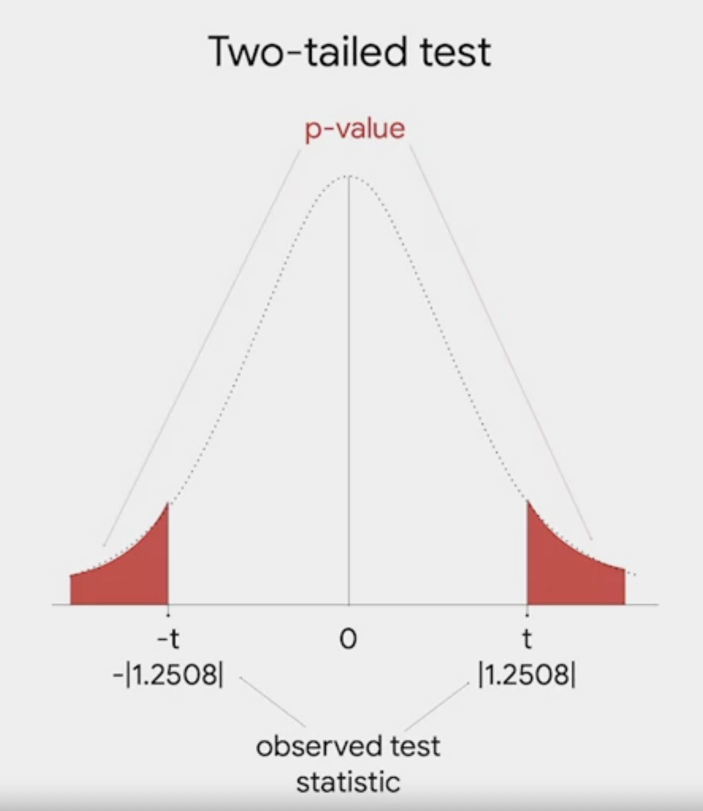
from scipy.stats import t
# Given t-score and degrees of freedom
t_score = -1.2541
df = 40+38-2 # degrees of freedom
# Two-tailed test p-value
p_value_two_tailed_t = 2 * (1 - t.cdf(abs(t_score), df))
print("Two-tailed p-value (t-test):", p_value_two_tailed_t)Two-tailed p-value (t-test): 0.21364931373347917P-value = 0.2136 or 21.36%
While p-value (21.36%) > significant level (5%), we fail to reject the null hypothesis, and conclude there is no statistically significant differece between the two mean.
Z-test for proportion
We use z-test for proportion as t-test does not apply to proportion for technical reasons.
Z-test for proportion can be used to compare:
- Defects among manufacturing products on two assembly lines
- Side effects to a new medicine for two trial groups
- Support for new law among voters in two disctricts
Two tail z-test for proportion case study - Customer satisfaction
Suppose the company claims that 80% of its customers are satisfied with their shopping experience. To test this claim, you survey a random sample of 100 customers. According to the survey, 73% of customers say they are satisfied. Based on the survey data, you conduct a z-test to evaluate the claim that 80% of customers are satisfied.
Hypothesis
- Null: P = 0.80 (the proportion of satisfied customers equals 80%)
- Alternative: P ≠ 0.80 (the proportion of satisfied customers does not equal 80%)
- Significant level: 5%
Z-score for proportion in hypothesis teseting \[Z = \frac{\hat{P}-P}{\sqrt{\frac{{P}(1-{P})}{n}}}\]
from scipy.stats import norm
import math
sample_mean = 0.73
pop_mean = 0.80
sample_size = 100
z_score = (sample_mean-pop_mean)/math.sqrt(pop_mean*(1-pop_mean)/sample_size)
print(f'Z-score: {z_score}')
# Two-tailed test p-value
p_value_two_tailed = 2 * (1 - norm.cdf(abs(z_score)))
print("Two-tailed p-value:", p_value_two_tailed)Z-score: -1.7500000000000016
Two-tailed p-value: 0.080118313727634P-value = 0.08
As P-value > significant level, you failed to reject the null hypothesis.
Note that the p-value of 0.08 does not mean there is an 8% probability that the sample proportion is 0.80. Instead, it means there is an 8% probability of observing a sample proportion as extreme as 0.73 or more extreme, given that the true population proportion is 0.80.
To put it in simple term, the p-value answers the question: “If the true population proportion is 0.80, what is the probability of observing a sample proportion as different from 0.80 as 0.73 is?”
Two-sample z-test for proportion case study - Employee satisfaction
Let’s say the HR team of an international company conducted an employee satisfaction survey for their London and Beijing office. Both has a sample size of 50. The satisfaction rate of the London office is 67%, Beijing is 57%. We want to find out if the 10% difference is due to chance.
Hypothesis
- Null (H0): There is no difference in the proportion of the satisfied employees in London and Beijing
- Alternative (Ha): There is a difference in the proportion of the satisfied employees in London and Beijing
- Significant level: 5%
- P-value: The probability of observing a difference in your sample proportion as or more extreme than the difference observed when the null hypothesis is true
In this case, we will reject the null hypothesis when p-value < 5%.
Z-score for two sample proportion \[Z=\frac{\hat{p_1}-\hat{p_2}}{\sqrt{\hat{p_0}(1-\hat{p_0})(\frac{1}{n_1}+\frac{1}{n_2})}}\]
\[\hat{p_1} = \text{Sample proportion of the 1st group}\] \[\hat{p_2} = \text{Sample proportion of the 2nd group}\]
\[n_1 = \text{Sample size of the 1st group}\] \[n_2 = \text{Sample size of the 2nd group}\] \[\hat{p_0} = \text{Pooled proportion (weighted average of the two samples)}\] \[\text{Pooled proportion} = \frac{x_1+x_2}{n_1+n_2}\] \[x_1 = \text{Number of success in sample 1}\] \[x_2 = \text{Number of success in sample 2}\]
import math
from scipy.stats import norm
p_1 = 0.67
p_2 = 0.57
p_0 = (0.67+0.57)/2
x_1 = 50
x_2 = 50
z = (p_1 - p_2)/math.sqrt(p_0*(1-p_0)*(1/x_1+1/x_2))
print(f'Z score: {z}')
# Two-tailed test p-value
p_value = 2 * (1 - norm.cdf(abs(z)))
print("Two-tailed p-value:", p_value)Z score: 1.0301070542879125
Two-tailed p-value: 0.30295975411763143Z score: 1.0301070542879125 Two-tailed p-value: 0.30295975411763143
The probability that thereis a 10% difference between two offices in London and Beijing is 30.3% under the null hypothesis. This is greater than the significant level, therefore we failed to reject the null hypothesis, and concluded that there is no statistical significant in the percentage difference between Beijing and London.
Linear regression
Simple linear regression
Linear regression model explore how one or multiple independent variable impact the dependent variable.
Equation \[Y = \text{intercept} + \text{slope}*X\]
Or it can be written as
\[\mu_{y|x}=\beta_0 + \beta_1 * X\]
It’s not always possible to get all the x and y variables in a population. For example if you want to evaluate the impact of number of social media followers against book sales, you can’t get all author in the world for your linear regression model. This is when we use a sample of the population to build the regression model. (estimate of the paramaters). To distinguish the differences, the equation has a hat on the estimate parameters.
\[ \hat{y} = \hat{\beta_0} + \hat{\beta_1} x \]
Independent variable (x) A variable that explains trends in the dependent variable, also referred to as an explanatory or predictor variable.
Dependent variable (y) The variable a given model estimates, also referred to as a response or outcome variable.
Slope The amount that y increases or decreases per one-unit increase of x.
Intercept The value of y when x equals 0.
Correlation Describes linear relationships between variables (positive/negative).
Linear regression coefficients The B-hat shown in the estimated formula are known as regression coefficients. A common way to caculate it is Ordinary Least Squares Estimation (OLS).
Best fitted line
In a simple linear regression model, we want to find the best fitted line, which is the line that fits the data best by minimizing some loss function or error.
There are a few key components associated with this concept.
Error
Some differences between the data we have, the observed values and the predicted value generated by a given model.
Predicted Value The estimated Y values for each X caculated by a model.
Residual The difference between observed or actual values and the predicted values of the regression line. We can calculate the residual for each data point. It’s important to note that the sum of residuals in always equal to 0 for OLS (Oridnary Least Squares)estimators. This is not always true for other estimators.
The equation for residual is: \[\epsilon_i=y_i - \hat{y_i}\]
\[\epsilon = \text{residual}\]
\[y_i = \text{observed}\]
\[\hat{y_i} = \text{predicted}\]
Sum of Squared Residuals (SSR)
The sum of the squared differences between each observed value and its associated predicted value. \[SSR = \sum_{i=1}^{n} ( y_i - \hat{y}_i )^2\]
Oridnary Least Squares (OLS)
In linear regression, we use OLS to get the best fitted line. OLS is a method that minimizes the error, or the sum of squared residuals to estimate parameters in a linear regression model.
Correlation coefficient (r, Pearson’s correlation coefficient)
The correlation coefficient quantifies the strength of the linear relationship between two variables. It always falls in the range of [-1, 1]. When r is negative, there is a negative correlation between the variables: as one increases, the other decreases. When r is positive, there is a positive correlation between the variables: as one increases, so too does the other. When r = 0, there is no linear correlation between the variables.
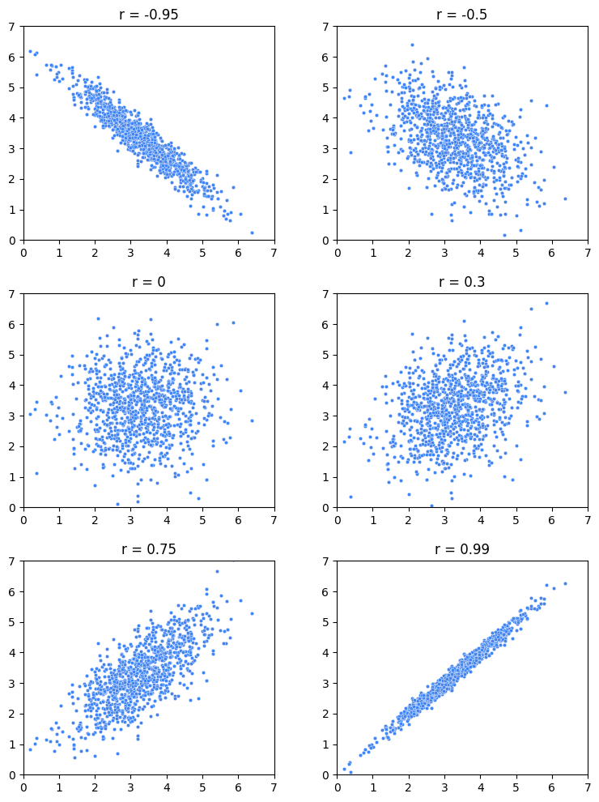
Note that there are cases where one variable might be precisely determined by another—like y=x2 or y=sin(x)—but the value of the linear correlation between X and Y would nonetheless be low or zero because their relationship is non-linear.
However, r only tells you the strength of the linear correlation between the variables; it does not tell you anything about the magnitude of the slope of the relationship between the variables aside from its sign.
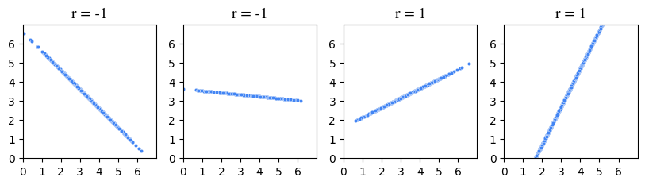
Equations
\[r = \frac{covariance(X, Y)}{(SD_X)(SD_Y)}\]
Where
\[covariance(X, Y) = \frac{\sum_{i=1}^{n} (x_i - \bar{x})(y_i - \bar{y})}{n}\]
\[\bar{x} = \text{mean of x}\]
\[\bar{y} = \text{mean of y}\]
The regression equation
Now that you know about r and you better understand the concept of regression, you’re ready to put everything together to find the line of best fit through the data. The formula for this line is known as the regression equation. There are two keys to this step.
The first is:
The mean value of X and the mean value of Y (i.e., point (x̄, ȳ)) will always fall on the regression line.
The second is to understand what r means:
For each increase of one standard deviation in X, there is an expected increase of r standard deviations in Y, on average over X.
In other words, the slope of the regression line is:
\[m=\frac{r(SD y)}{(SD x)}\]
This is m in the formula for a line: y = mx + b. The intercept, represented by b, is therefore: b = y - mx. Because you know that point (x̄, ȳ) is always on the regression line, you can plug in the x and y values from this point to calculate the intercept. Here’s an example using the original sample of five students.
| Hours studying (X) | Exam grade (Y) | |
|---|---|---|
| mean: | 5 | 80 |
| SD: | 2 | 10 |
| r: | 0.6 |
Now we know the r score, we can use it to calculate the slope(m) and the intercept (b):
Slope (m) \[m=\frac{r(SD y)}{(SD x)}=\frac{0.6(10)}{2}=3\]
Intercept (b) \[y=mx+b\] \[80=3(5)+b\] \[b=65\]
Model assumption
Linearity
Each predictor variable (Xi) is linearly related to the outcome variable (Y). If you plot the X and Y variables into a scatter plot, they should approximately form a striaght line.
```{python}
# Create pairwise scatterplots of Chinstrap penguins data
sns.pairplot(chinstrap_penguins)
```Normality
The residuals or errors are normally distributed. You can only check this after the model is built.
The normality assumption focuses on the errors, which can be estimated by the residuals, or the difference between the observed values in the data and the values predicted by the regression model. Once the model has been built, you can either create a QQ-plot to check that the residuals are normally distributed, or create a histogram of the residuals. Whether the assumption is met is up to some level of interpretation.
The quantile-quantile plot (Q-Q plot) is a graphical tool used to compare two probability distributions by plotting their quantiles against each other. Here’s how Q-Q plots work when assessing the normality of a model’s residuals:
Rank-order the residuals Sort your n residuals from least to greatest. For each one, calculate what percentage of the data falls at or below this rank. These are the n quantiles of your data.
Compare to a normal distribution Divide a standard normal distribution into n+1 equal areas (i.e., slice it n times). If the residuals are normally distributed, the quantile of each residual (i.e., what percentage of the data falls below each ranked residual) will align closely with the corresponding z-scores of each of the n cuts on the standard normal distribution (these can be found in a normal z-score table or, more commonly, using statistical software).
Construct a plot A Q-Q plot has the known quantile values of a standard normal distribution along its x-axis and the rank-ordered residual values on its y-axis. If the residuals are normally distributed, the quantile values of the residuals will correspond with those of the standardized normal distribution, and both will increase linearly. If you first standardize your residuals (convert to z-scores by subtracting the mean and dividing by the standard deviation), the two axes will be on identical scales, and, if the residuals are indeed normally distributed, the line will be at a 45° angle. However, standardizing the residuals is not a requirement of a Q-Q plot. In either case, if the resulting plot is not linear, the residuals are not normally distributed.
Below are Q-Q plots showing different types of distribution:
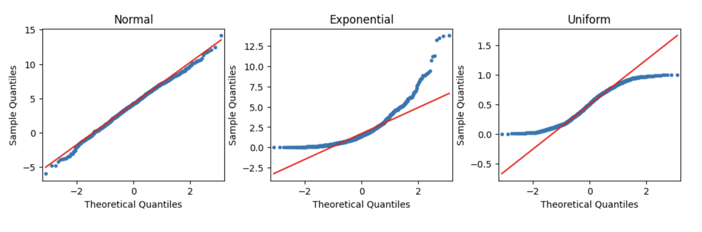
After you calculated the residuals from a linear regression model, you can use the statsmodel to directly plot a Q-Q plot.
```{python}
import statsmodels.api as sm
import matplotlib.pyplot as plt
residuals = model.resid # the residual calculated from a model
fig = sm.qqplot(
residuals,
line = 's' # Standardized Line: this adds a line that passes through the mean of the data and has a slope equal to the standard deviation of the data. It accounts for the specific scale of the sample data. If the data is not standardized (i.e., not converted to z-scores), this line helps compare the data's actual scale to the expected normal distribution's scale.
)
plt.show()
```Independent observations
Each observation in the dataset is independent.
Whether or not observations are independent is dependent on understanding your data. Asking questions like:
How was the data collected? What does each data point represent? Based on the data collection process, is it likely that the value of one data point impacts the value of another data point?
An objective review of these questions, which would include soliciting insights from others who might notice things you don’t, can help you determine whether or not the independent observations assumption is violated. This in turn will allow you to determine your next steps in working with the dataset at hand.
Homoscedasticity
The variation of the residuals (errors) is constant or similar across the model.
Like the normality assumption, the homoscedasticity assumption concerns the residuals of a model, so it can only be evaluated after a regression model has already been constructed. A scatterplot of the fitted values (i.e., the model’s predicted Y values) versus the residuals can help determine whether the homoscedasticity assumption is violated.
In a homoscedastic model:
The residuals should be randomly scattered around zero with no clear pattern (e.g., no funnel shape or systematic variation).
There should not be a visible trend or increasing spread as the fitted values increase.
To determine if the assumption is satisfied: Random Scatter: If the points are randomly distributed around the horizontal line (y = 0), with no discernible patterns or increasing spread, then homoscedasticity is satisfied.
No Funnel Shape: If the residuals fan out or create a funnel-shaped pattern (narrow at one end, wider at the other), this indicates heteroscedasticity (non-constant variance), meaning the assumption is violated.
```{python}
import matplotlib.pyplot as plt
fig = sns.scatterplot(fitted_values, residuals)
fig.axhline(0)
fig.set_xlabel("Fitted Values")
fig.set_ylabel("Residuals")
plt.show()
```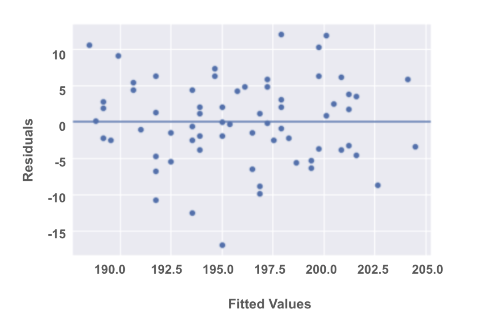
In this example plot, the residuals seem to be scattered without a clear pattern, though there is a slight variation in spread toward the middle and ends of the plot. However, it does not seem to exhibit a strong funnel shape or a systematic increase in variance. Based on this, the model likely passes the homoscedasticity assumption.
Note on errors and residuals
The terms “errors” and “residuals” sometimes used interchangeably in connection with regression. In actuality, there is a difference:
Residuals are the difference between the predicted and observed values. You can calculate residuals after you build a regression model by subtracting the predicted values from the observed values. Errors are the natural noise assumed to be in the model. Residuals are used to estimate errors when checking the normality and homoscedasticity assumptions of linear regression.
Use logarithm to transform unfit assumptions
Applying a log transformation (natural logarithm) in linear regression can make the data more suitable for a linear model by addressing: - Skewness (right-skewed data) (e.g. income, house price) - Non-linear relationships (exponential or multiplicative relationships) (e.g. biological growth, population growth) - Reducing the impact of outliers. - Stabilizing variance.
The natural logarithm (often denoted as ln), which is the logarithm with base e, where e ≈ 2.718. It is a mathematical function that transforms data by compressing large values more than small ones, which can help in stabilizing variance and linearizing relationships between variables in certain situations.
For y > 0
\[y=e^x\]
\[\quad Y_{\text{log}} = \ln(Y)\]
\[ln(y)=ln(e^x)\]
If y = 1000, log(y) = 6.907755278982137
And after you finished the computation using the log variable, you can use expotential function to transform it back. (It may be slighly difference due to rounding)
import numpy as np
y=1000
log_y = np.log(y)
print(log_y)
reverse_log_y = np.exp(log_y)
print(reverse_log_y)6.907755278982137
999.9999999999998In the context of a pandas dataframe, you can use the apply function to tranform the data in a column:
```{python}
data['Income_1'] = data['LogIncome'].apply(np.exp)
data['LogIncome_1'] = data['Income'].apply(np.log)
```Fixing other unfit assumptions
Left-Skewed Distributions For left-skewed distributions (where the tail is on the left), log transformation is generally not used. Instead, transformations like the square or cube may be applied to “stretch” smaller values and reduce the skewness. For left-skewed data, transformations such as square root or inverse are more appropriate.
Zero or negative values Logarithms can’t be applied to zero or negative values, so data with such values need to be handled differently (for example, adding a small constant to avoid issues).
Homoscedasticity Define a different outcome variable. If you are interested in understanding how a city’s population correlates with the number of restaurants in a city, you know that some cities are much more populous than others. You can then redefine the outcome variable as the ratio of population to restaurants.
Independent observations Take just a subset of the available data.
If, for example, you are conducting a survey and get responses from people in the same household, their responses may be correlated. You can correct for this by just keeping the data of one person in each household.
Another example is if you are collecting data over a time period. Let’s say you are researching data on bike rentals. If you collect your data every 15 minutes, the number of bikes rented out at 8:00 a.m. might correlate with the number of bikes rented out at 8:15 a.m. But, perhaps the number of bikes rented out is independent if the data is taken once every 2 hours, instead of once every 15 minutes.
Run a simple linear regression model in Python with the OLS method
# Import packages
import pandas as pd
import seaborn as sns
import matplotlib.pyplot as plt
from statsmodels.formula.api import ols
import statsmodels.api as sm
# Load dataset
penguins = sns.load_dataset("penguins")
# Data cleaning
penguins_sub = penguins[penguins["species"] != "Chinstrap"]
penguins_final = penguins_sub.dropna()
penguins_final.reset_index(inplace=True, drop=True)
# Check assumptions
sns.pairplot(penguins_final)
# Model construction
## Subset Data
ols_data = penguins_final[["bill_length_mm", "body_mass_g"]]
## Write out formula ("y ~ x")
ols_formula = "body_mass_g ~ bill_length_mm"
## Build OLS, fit model to data
OLS = ols(formula = ols_formula, data = ols_data)
model = OLS.fit()
print('Model Summary')
print(model.summary())
# coef of y = intercept = b
# coef of x = slope = m
# y = mx + b
sns.regplot(x = "bill_length_mm", y = "body_mass_g", data = ols_data)
plt.show()
# Check assumptions again
## Get residuals and precitions from the model
# Subset X variable
X = ols_data["bill_length_mm"]
# Get predictions from model
fitted_values = model.predict(X)
# Calculate residuals
residuals = model.resid
##Normality
### histogram
fig = sns.histplot(residuals)
fig.set_xlabel("Residual Value")
fig.set_title("Histogram of Residuals")
plt.show()
## QQ plot
fig = sm.qqplot(model.resid, line = 's')
plt.show()
##Homoscedasticity
### the fitted value is the dependent varaible according to independent variable. Get the y according to the value of x, that's why there was a line (fitted_values = model.predict(X))
fig = sns.scatterplot(x=fitted_values, y=residuals)
# Add reference line at residuals = 0
fig.axhline(0)
# Set x-axis and y-axis labels
fig.set_xlabel("Fitted Values")
fig.set_ylabel("Residuals")
# Show the plot
plt.show()Model Summary
OLS Regression Results
==============================================================================
Dep. Variable: body_mass_g R-squared: 0.769
Model: OLS Adj. R-squared: 0.768
Method: Least Squares F-statistic: 874.3
Date: Thu, 17 Oct 2024 Prob (F-statistic): 1.33e-85
Time: 07:08:09 Log-Likelihood: -1965.8
No. Observations: 265 AIC: 3936.
Df Residuals: 263 BIC: 3943.
Df Model: 1
Covariance Type: nonrobust
==================================================================================
coef std err t P>|t| [0.025 0.975]
----------------------------------------------------------------------------------
Intercept -1707.2919 205.640 -8.302 0.000 -2112.202 -1302.382
bill_length_mm 141.1904 4.775 29.569 0.000 131.788 150.592
==============================================================================
Omnibus: 2.060 Durbin-Watson: 2.067
Prob(Omnibus): 0.357 Jarque-Bera (JB): 2.103
Skew: 0.210 Prob(JB): 0.349
Kurtosis: 2.882 Cond. No. 357.
==============================================================================
Notes:
[1] Standard Errors assume that the covariance matrix of the errors is correctly specified.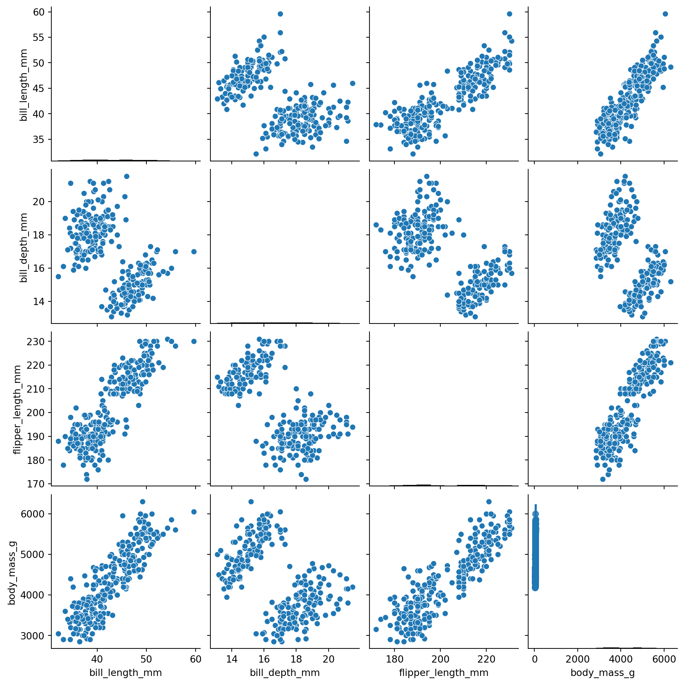
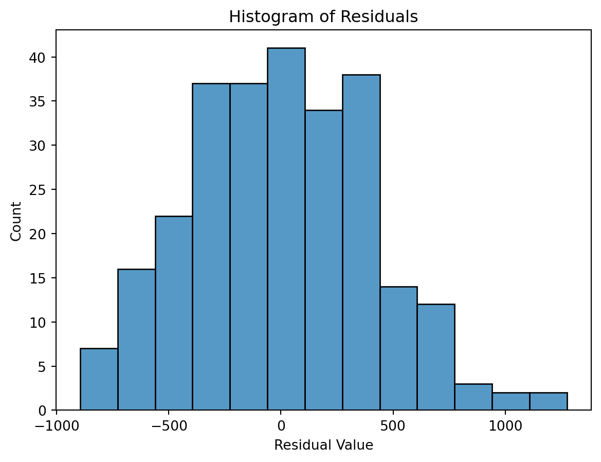
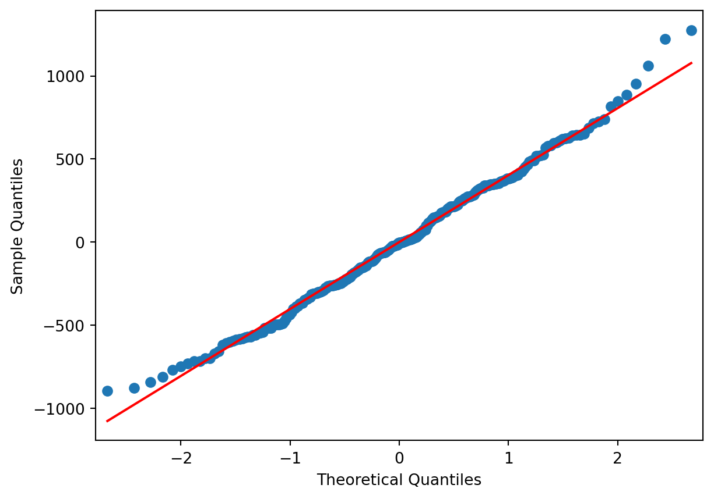
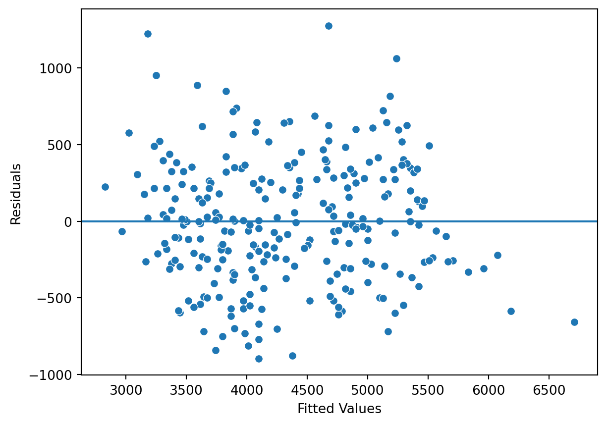
Evaluate the linear regression model
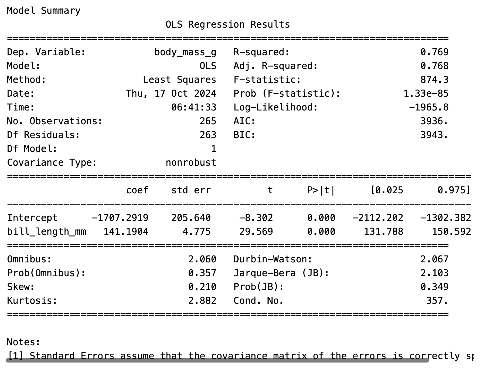
P>|t| = the p value associated with the coefficient estimate
[0.025] & [0.975] = a 95% confidence interval around the coefficient estimate
In a linear regression model. You will focus on the above metrics for the independent variable, and less on the dependent varaiable.
P-values
When running regression analysis, you want to know if X is really correlated with y or not. So we do a hypothesis test on the regression results. In regression analysis, for each beta coefficient, we are testing the following set of null and alternative hypotheses:
H0 (null hypothesis): \[\beta_1=0\]
H1 (alternative hypothesis): \[\beta_1! \neq0\]
In our example, because the p-value is less than 0.05, we can reject the null hypothesis that β1 is equal to 0, and state that the coefficient is statistically significant, which means that a difference in bill length of a penguin is truly correlated with a difference in body mass.
Confidence band
The area surrounding the line that descrines the uncertainty around the predicted outcome at every value of X.
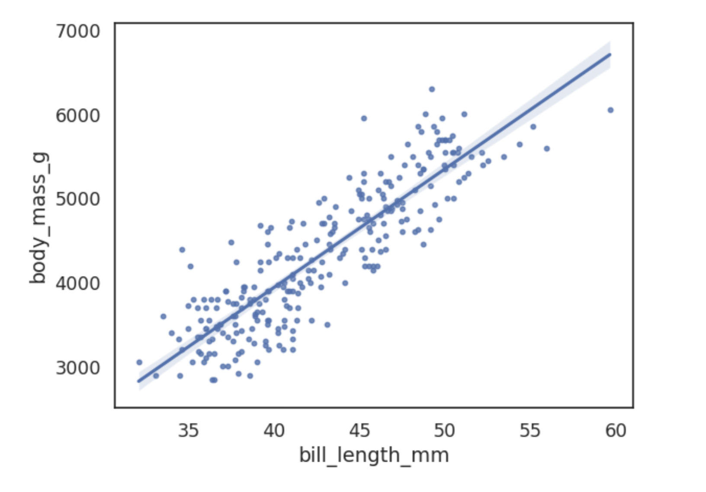
Each beta coefficient also has a confidence interval associated with its estimate. A 95% interval means the interval itself has a 95% chance of containing the true parameter value of the coefficient. So there is 5% chance that our confidence interval [131.788, 150.592] does not contain the true value of β1. More precisely, this means that if you were to repeat this experiment many times, 95% of the confidence intervals would contain the true value of β1.
But, since there is uncertainty in both of the estimated beta coefficients, then the estimated y values also have uncertainty. This is where confidence bands become useful.
Multiple linear regression
Advanced hypothesis testing
Logistic regression
A technique that models a categorical dependent variable based on one or more independent variables. For example, if leads become subscriber or not, customer renew or not renew. The dependent variable can have two or more possible discrete values.
In the case of logistic regression, the relationship between x and y doesn’t forma straight line.
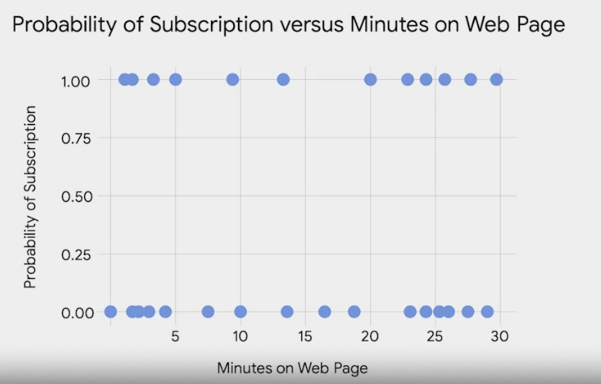
Therefore we need a different way to model the logistic regression. The key is to get the probability of y equals to 1 given x.
\[\mu_{y|x} = \text{Prob}(Y=1|X)\]
An easy way to do it would be sum all binary y (0 or 1) and devide by the total count.
However, you would want to link this equation to a regression equation with a formula.
The link function
A nonlinear function that connects or links the dependent variable to the independent variables mathematically.
\[g(p)=\beta_0 + \beta_1 * X\]
Linear regression VS Logistic regression
| Linear regression | Logistic regression |
|---|---|
| Continious data (e.g. 1, 2, 3…) | Categorial data (e.g. subscribed or not) |
| Estimate the mean of y | Estimate the probability of an outcome |